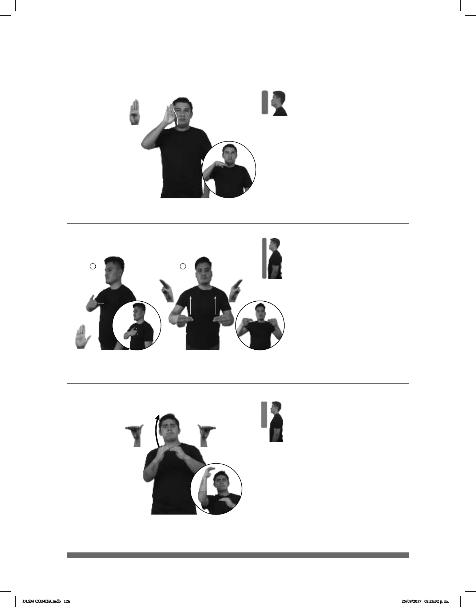

126
(B-P 46)
___muy
dm-RAMIRO ASTUTO
Ramiro es muy astuto.
Seña: SM
B-P.1
Palma hacia afuera y
termina hacia abajo.
A la altura de la cara,
del lado derecho.
La mano se mueve
muñeca.
adj. Hábil para engañar
o evitar ser engañado o para lograr
(B-P 47)
pro-YO TENER ASUNTO-PENDIENTE
Tengo un asunto pendiente.
Seña: SC: I. SM; II. SS
I. B-P.2; II. U.3
I. y II. Palmas hacia
adentro.
I. Sobre el pecho; II. De
la cintura a los hombros.
I. La mano simula
varios saltos; II. Recto.
sust. m. Negocio
ocupación, quehacer.
Seña: SB
MD y MB B-P.11
MD palma hacia la
izquierda; MB palma hacia la derecha.
MD de MB a la altura de la
cabeza; MB a la altura del pecho.
MD el brazo se mueve
formando un arco.
v. intr. Hacerse algo
más grande en cantidad, tamaño,
intensidad, etc; adquirir alguien mayor
peso o tamaño.
(B-P 48)
TIENDA ESTE AÑO GANANCIAS AUMENTAR++
Este año aumentarán las ganancias en la tienda.
DLSM COMISA.indb 126 25/09/2017 02:24:32 p. m.